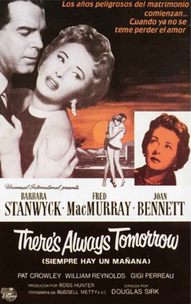
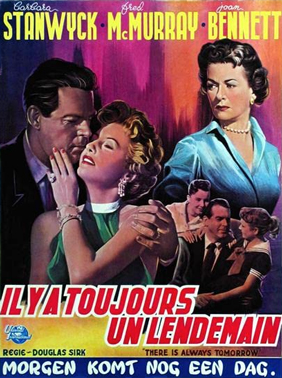
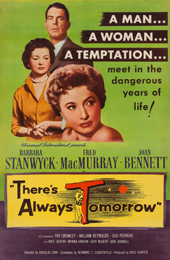

There's Always Tomorrow
Hal Smith
SYNOPSIS
When a toy manufacturer feels ignored and unappreciated by his wife and children, he begins to rekindle a past love when a former employee comes back into his life.
Clifford Groves, toy manufacturer, is in full charge at the factory but feels left out and taken for granted by his wife and children at home. Alone and depressed, he meets old flame Norma, and one thing leads to another. While their relationship is still fairly innocent, his son Vinnie sees them together and suspects the worst. It's time for tortured souls behind rain-streaming windows ...
The screenplay, based on a novel by Ursula Parrott, is by Bernard C. Schoenfeld, which tells the tales of a toy-maker's unhappiness with his domestic life and his seeking of an exciting adventure with an old flame who pops into town.
Twenty two years earlier, Universal produced a same-titled version of this story, directed by Edward Sloman. Released in November 1934, the film provided an infrequent leading role for character star Frank Morgan (five years before The Wizard of Oz), with Binnie Barnes as his old flame and Lois Wilson as his wife. Douglas Sirk originally wanted There's Always Tomorrow to shot in colour, but Universal refused; the studio, however, did grant the director's request of having cinematographer Russell Metty work on the film.
The scenes at the fictional Palm Valley Inn were filmed at the Apple Valley Inn. In this film MacMurray's character says to Stanwyck's: "After all these years ... it's certainly wonderful to see you again." and she replies "It's wonderful to see you too." MacMurray and Stanwyck had previously starred together in three other films: the Christmas romantic comedy trial film Remember the Night, a western film called The Moonlighter and twelve years earlier, in the classic film noir Double Indemnity.
'The Motion Picture Guide' describes it as "another of director Sirk's melodramatic, bitter attacks on the values of American middle-class life in the 1950s" and informs that Sirk's planned conclusion "was even darker than what appeared on the screen. The ending he filmed has MacMurray's toy-robot Rex marching across a table top - making a final connection between his character and Rex. The original scenario had Rex reaching the edge of the desk and toppling to the ground. After crashing to the floor, the robot would struggle through a few final kicks before the end credits rolled." In the write-up, Sirk's biographer, Michael Stern, quotes the director, "In tragedy the life always ends. By being dead, the hero is at the same time rescued from life's troubles. In melodrama, he lives on - in an unhappy happy end."


